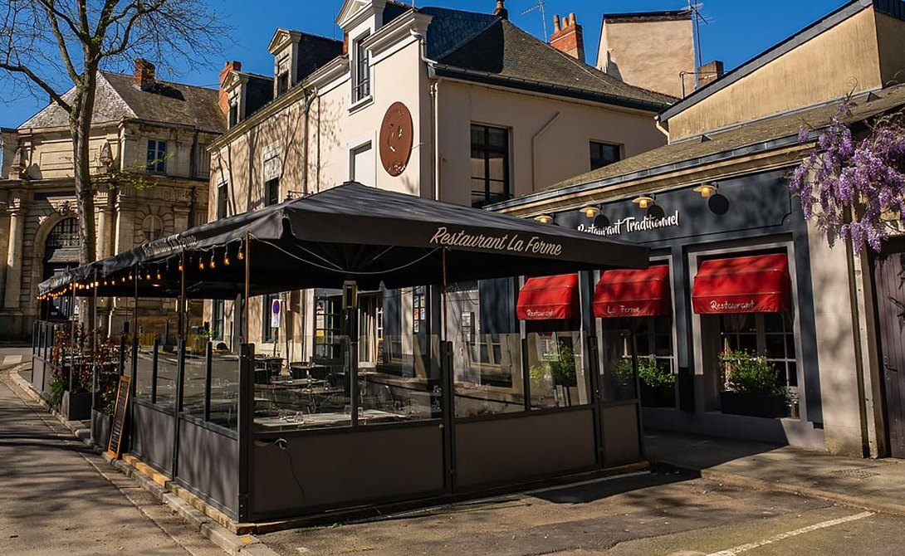
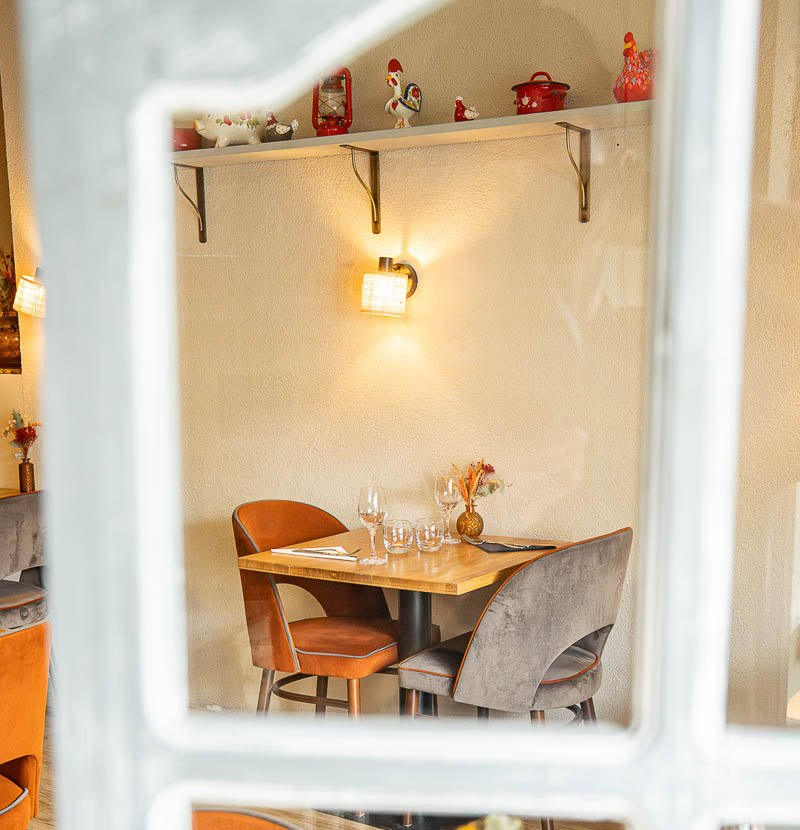
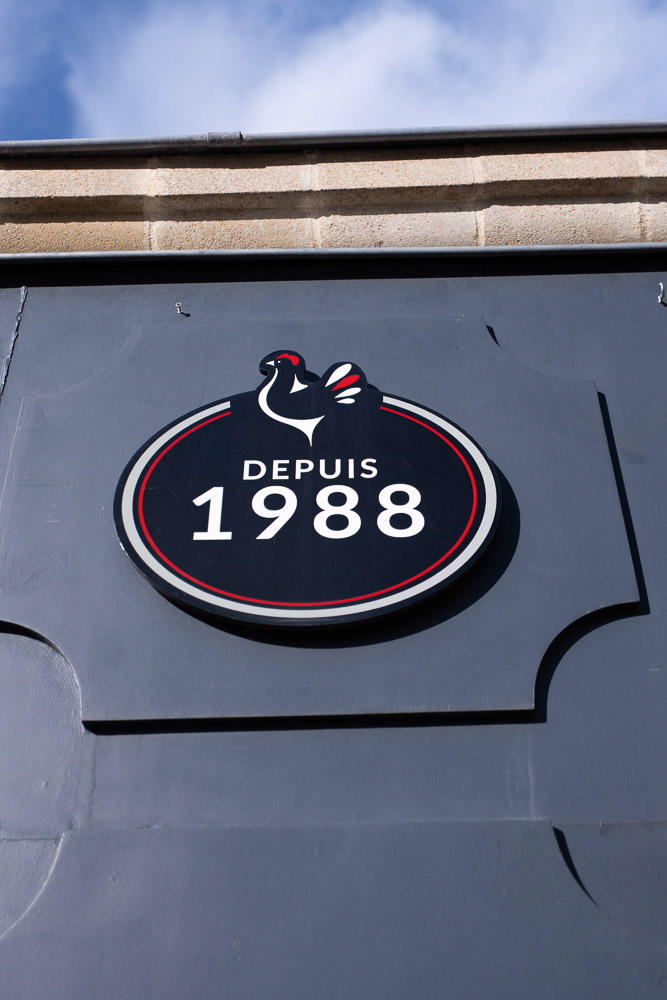
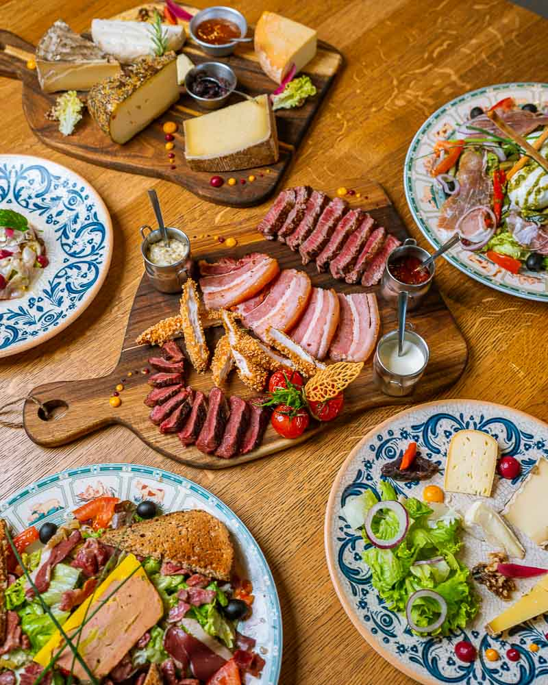
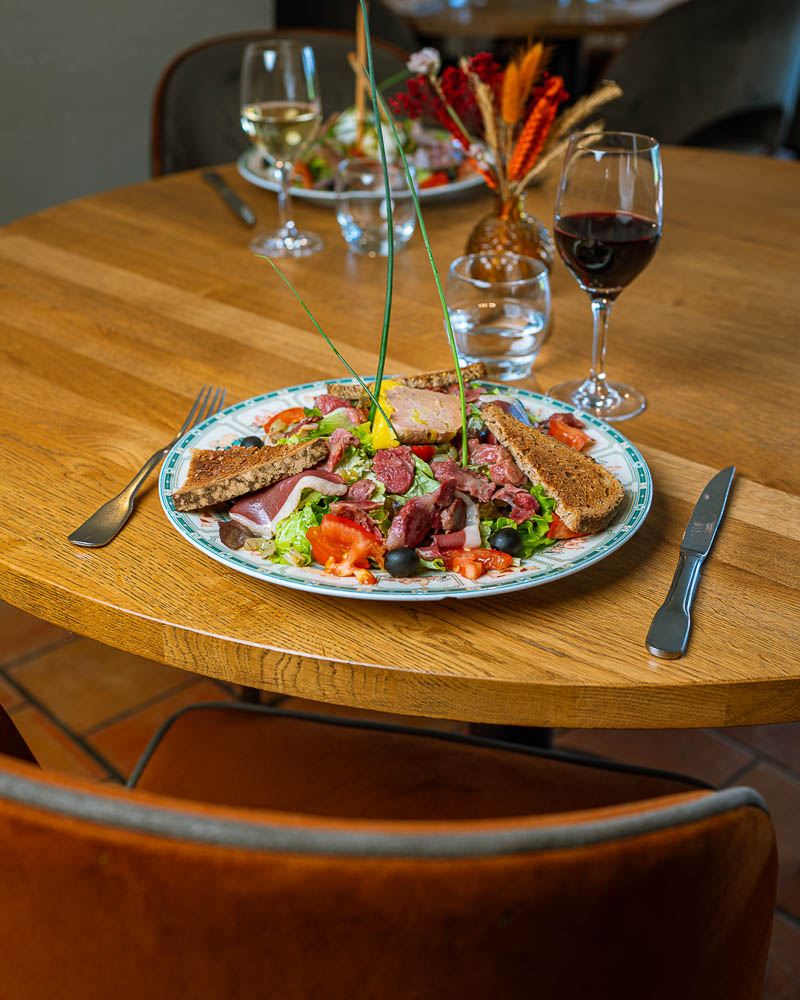
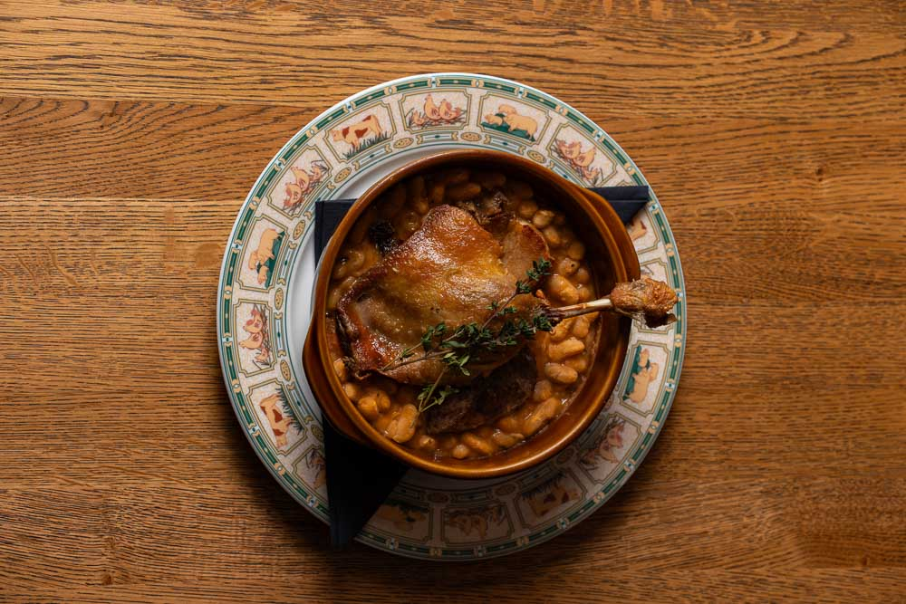
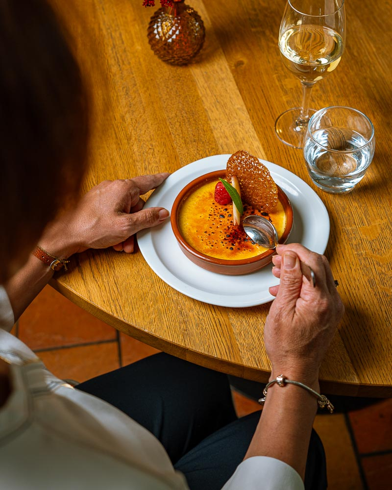
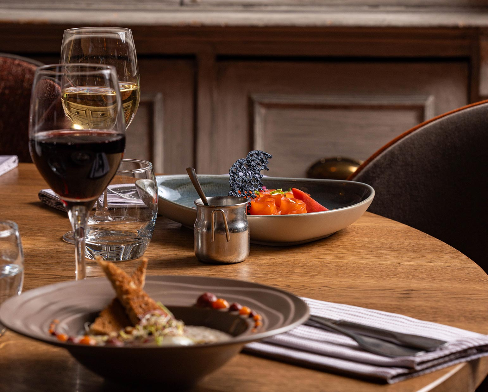

Restaurant traditionnel · Angers
Maria et Bruno Besnard vous accueillent à La Ferme pour une cuisine « fait maison », généreuse et pleine de saveurs — entre traditions du terroir et inspirations d'aujourd'hui.

Du mardi au samedi
Midi 12h00 – 14h00
Soir 19h00 – 21h00
02 41 87 09 90
Pensez à réserver.
Plat du jour 14 €
Menus 18 € et 22 €
Menu 29 € et menu 35 €
Prix nets, taxes comprises
Deux salles · une terrasse
Le chef, Bruno Besnard, et sa femme, Maria Besnard, vous invitent à découvrir leur cuisine « maison » alliant saveur et authenticité. Une cuisine de terroir qui s'invite à votre table, mariant les nouvelles tendances au respect des traditions.
En toute saison, vous apprécierez le cadre de La Ferme : l'hiver, dans son intérieur chaleureux et accueillant ; l'été, sur sa terrasse extérieure au pied de la cathédrale d'Angers. Deux grandes salles, à deux pas du vieux quartier historique et du château.
Nos vins sont sélectionnés avec passion et rigueur, en partenariat avec les viticulteurs : vous trouverez tout un échantillon de vins exposés en vinothèque, et une sélection magnum pour vos événements.
Excellent ! La déco est sympa, inspirée des métiers de la ferme. La cuisine est top ! Pensez à réserver avant d'y aller !Peggy Chartier — avis publié sur restaurant-laferme.com


Tous les midis, du mardi au vendredi — sauf jours fériés
Nos mets sont entièrement réalisés par le Chef et son équipe. Prix nets et taxes comprises.
Fait maison · prix nets
35 €
Menu entrée, plat et dessert — certains plats appellent un supplément, indiqué en face du plat.
29 €
Menu entrée et plat, ou plat et dessert. Servi tous les jours, midi et soir.
Planche de « La Ferme »19 €
charcuterie et fromages : jambon cru ibérique, andouille, chorizo, coppa, Comté, Curé Nantais, beurre et condimentsBeignets de morue5 €
4 unitésPot de rillettes de porc fait maison6 €
115 g, cornichons et toastsPlanche mix grill46 €
pour 2 personnes — bœuf, magret de canard, poitrine de porc, filet de poulet croustillant (origine France), sauces barbecue, roquefort et gribiche, frites maison, haricots blancs et salade Menu +4 €



Salade landaise21 €
salade, tomates, gésiers, magret fumé maison, foie gras de canard, toasts et olivesSalade italienne18 €
salade, tomates, légumes grillés, jambon cru, burrata, pesto et gressinsFoie gras de canard maison au Coteaux du Layon16 €
chutney d'oignons rouges et toasts Menu +3 €Gouline angevine9 €
rillauds, champignons, moutarde à l'ancienne, échalotes, sauce à la Tomme et sa salade verteŒuf parfait10 €
mousseline de chou-fleur, saumon gravlax et tuile de sarrasinCeviche de dorade aux fruits de la passion10 €
crémeux de menthe et cébetteVitello de veau10 €
origine France — jeunes pousses et sa crème d'ail noirCassoulet de « La Ferme » maison24 €
origine France — confit de canard, saucisse artisanale, rillaud d'Anjou et haricots blancs Menu +2 €Demi-magret de canard22 €
origine France — sauce au poivre vert, purée de pommes de terre et légumesConfit de canard20 €
origine France — sauce au poivre et pommes de terre sarladaisesEntrecôte de bœuf26 €
origine France — sauce au roquefort, frites maison et toasts Menu +5 €Tartare de bœuf préparé22 €
coupé au couteau, servi avec ses frites maisonPoêlée de Saint-Jacques24 €
crème de whisky et son risotto aux alguesPavé de cabillaud en croûte d'herbes22 €
jus de cresson, purée de pommes de terre à la ciboulette et légumes glacésBouse de Vache « fameuse »11 €
grande profiterole, glace vanille, chocolat et caramel — « depuis 1988 à La Ferme » Menu +2 €Plateau de fromages et sa salade verte10 €
fromages au lait pasteurisé, à l'exception du Curé Nantais au lait cruCroquant au chocolat10 €
feuilletine et pralinéCafé gourmand11 €
4 gourmandises Menu +2 €Colonel11 €
glace citron et vodka Menu +2 €Crémet d'Anjou9 €
coulis de fruits rougesCrème brûlée à la vanille de Bourbon9 €
Soupe de fraises9 €
espuma au limoncelloDame blanche9 €
glace vanille, coulis chocolat chaud et crème fouettée maisonGlace Robin des Bois9 €
fraise, cassis, framboise et crème fouettéeBoule de glace au choix3 €
2 boules : 6 €Le dessert de la maison
Une grande profiterole, glace vanille, chocolat et caramel. Elle porte le nom le moins élégant de la carte et c'est celui que les clients retiennent — au point de la citer dans leurs avis avant même de parler du reste.
Détour obligatoire pour une tête de veau exceptionnelle et le dessert La Bouse de Vache.Morgane Le Goas
La cuisine est sans blabla, mais très bien structurée, sérieuse mais d'aujourd'hui. Des entrées aux desserts, tout est maîtrisé.Sébastien Roux
Deux salles · terrasse

Centre-ville d'Angers
Du mardi au samedi,
midi et soir.
Midi : 12h00 – 14h00
Soir : 19h00 – 21h00
2 place Freppel
49100 Angers
Entre la cathédrale et le château
Un repas de prévu en amoureux ou entre amis ? Commandez au 02 41 87 09 90.
Allergènes — les produits utilisés dans notre cuisine pouvant être allergènes sont les suivants : gluten, crustacés, poissons, œufs, arachides, soja, lait, fruits à coques, céleri, moutarde, graines de sésame, anhydride sulfureux et sulfites, lupins et mollusques. Si vous avez la moindre question à ce sujet, n'hésitez pas à nous en faire part et à demander notre classeur des allergènes.